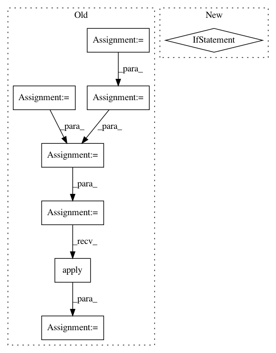

e3c3b5cfbebc659143ea9bc95b43313b64444be4,examples/pytorch/BertNewsClassification/bert_classification.py,BertDataModule,setup,#BertDataModule#Any#,110
Before Change
:param stage: Stage - training or testing
// reading the input
dataset_tar = download_from_url(URLS["AG_NEWS"], root=".data")
extracted_files = extract_archive(dataset_tar)
train_csv_path = None
for fname in extracted_files:
if fname.endswith("train.csv"):
train_csv_path = fname
df = pd.read_csv(train_csv_path)
df.columns = ["label", "title", "description"]
df.sample(frac=1)
df = df.iloc[: self.args["num_samples"]]
df["label"] = df.label.apply(self.to_label)
self.tokenizer = BertTokenizer.from_pretrained(self.PRE_TRAINED_MODEL_NAME)
RANDOM_SEED = 42
After Change
num_samples = self.args["num_samples"]
df = (
get_20newsgroups(num_samples)
if self.args["dataset"] == "20newsgroups"
else get_ag_news(num_samples)
)
self.tokenizer = BertTokenizer.from_pretrained(self.PRE_TRAINED_MODEL_NAME)
RANDOM_SEED = 42
In pattern: SUPERPATTERN
Frequency: 3
Non-data size: 8
Instances
Project Name: mlflow/mlflow
Commit Name: e3c3b5cfbebc659143ea9bc95b43313b64444be4
Time: 2021-02-11
Author: hkawamura0130@gmail.com
File Name: examples/pytorch/BertNewsClassification/bert_classification.py
Class Name: BertDataModule
Method Name: setup
Project Name: QUANTAXIS/QUANTAXIS
Commit Name: a3b39f9e6e7e1b33a3eb9919923d939430b60b86
Time: 2017-09-01
Author: yutiansut@qq.com
File Name: QUANTAXIS/QAFetch/QATdx.py
Class Name:
Method Name: QA_fetch_get_stock_min
Project Name: QUANTAXIS/QUANTAXIS
Commit Name: a3b39f9e6e7e1b33a3eb9919923d939430b60b86
Time: 2017-09-01
Author: yutiansut@qq.com
File Name: QUANTAXIS/QAFetch/QATdx.py
Class Name:
Method Name: QA_fetch_get_stock_latest